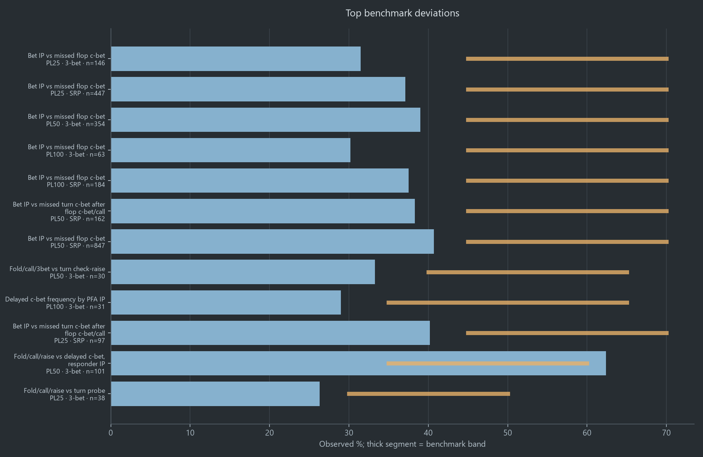
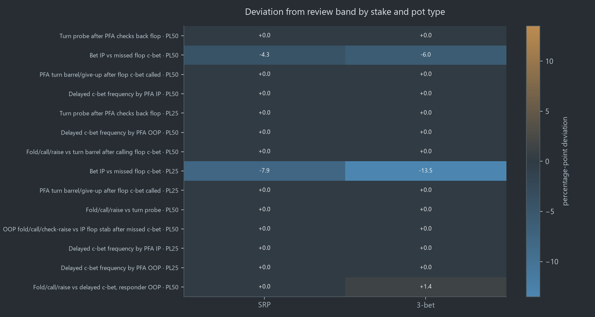
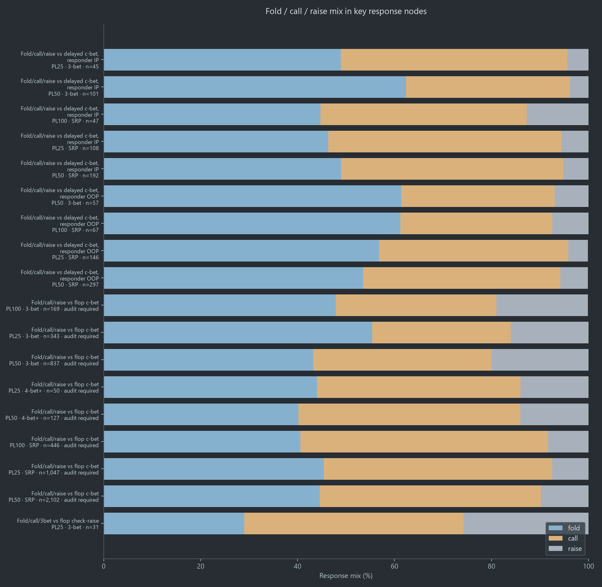
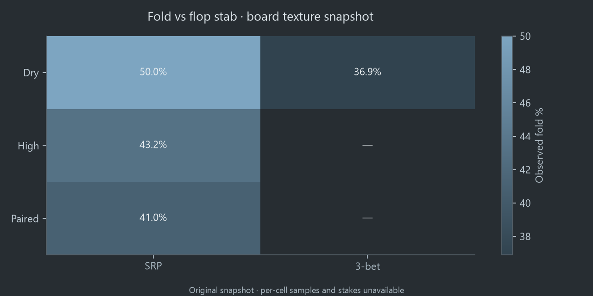

Population report
Decision frequencies by stake and pot type.
Priority review
| Decision node | Stake | Pot | Opps | Metric | Observed % | Diff. pp | Status |
|---|---|---|---|---|---|---|---|
| Bet IP vs missed flop c-bet | PL50 | SRP | 847 | Bet | 40.7 | -4.3 | Below band |
| Bet IP vs missed flop c-bet | PL25 | SRP | 447 | Bet | 37.1 | -7.9 | Below band |
| Bet IP vs missed flop c-bet | PL50 | 3-bet | 354 | Bet | 39 | -6 | Below band |
| Bet IP vs missed flop c-bet | PL100 | SRP | 184 | Bet | 37.5 | -7.5 | Below band |
| Bet IP vs missed turn c-bet after flop c-bet/call | PL50 | SRP | 162 | Bet | 38.3 | -6.7 | Below band |
| Bet IP vs missed flop c-bet | PL25 | 3-bet | 146 | Bet | 31.5 | -13.5 | Below band |
| Fold/call/raise vs delayed c-bet, responder IP | PL50 | 3-bet | 101 | Fold | 62.4 | 2.4 | Above band |
| Bet IP vs missed turn c-bet after flop c-bet/call | PL25 | SRP | 97 | Bet | 40.2 | -4.8 | Below band |
| Fold/call/3bet vs flop check-raise | PL50 | 3-bet | 90 | Fold | 28.9 | -1.1 | Below band |
| Fold/call/raise vs delayed c-bet, responder OOP | PL100 | SRP | 67 | Fold | 61.2 | 1.2 | Above band |
| Bet IP vs missed flop c-bet | PL100 | 3-bet | 63 | Bet | 30.2 | -14.8 | Below band |
| Fold/call/raise vs delayed c-bet, responder OOP | PL50 | 3-bet | 57 | Fold | 61.4 | 1.4 | Above band |
Select a row to inspect its sample and action distribution.
All decision nodes
| Decision node | Stake | Pot | Opps | Bet % | Check % | Fold % | Call % | Raise % | Avg. size % | Status | Sample | Review score |
|---|---|---|---|---|---|---|---|---|---|---|---|---|
| Bet IP vs missed flop c-bet | PL100 | 3-bet | 63 | 30.2 | 69.8 | 0 | 0 | 0 | 55.1 | Below band | LOW | 5.9 |
| Bet IP vs missed flop c-bet | PL100 | 4-bet+ | 1 | 0 | 100 | 0 | 0 | 0 | — | Low sample | IGNORE | 4.5 |
| Bet IP vs missed flop c-bet | PL100 | SRP | 184 | 37.5 | 62.5 | 0 | 0 | 0 | 58.7 | Below band | MEDIUM | 5.2 |
| Bet IP vs missed flop c-bet | PL25 | 3-bet | 146 | 31.5 | 68.5 | 0 | 0 | 0 | 68.7 | Below band | MEDIUM | 9.4 |
| Bet IP vs missed flop c-bet | PL25 | 4-bet+ | 10 | 60 | 40 | 0 | 0 | 0 | 62.6 | Low sample | IGNORE | 0 |
| Bet IP vs missed flop c-bet | PL25 | SRP | 447 | 37.1 | 62.9 | 0 | 0 | 0 | 63.5 | Below band | HIGH | 7.9 |
| Bet IP vs missed flop c-bet | PL50 | 3-bet | 354 | 39 | 61 | 0 | 0 | 0 | 57.8 | Below band | HIGH | 6 |
| Bet IP vs missed flop c-bet | PL50 | 4-bet+ | 22 | 45.5 | 54.5 | 0 | 0 | 0 | 72.9 | Low sample | IGNORE | 0 |
| Bet IP vs missed flop c-bet | PL50 | SRP | 847 | 40.7 | 59.3 | 0 | 0 | 0 | 62.5 | Below band | HIGH | 4.3 |
| Bet IP vs missed turn c-bet after flop c-bet/call | PL100 | 3-bet | 12 | 33.3 | 66.7 | 0 | 0 | 0 | 44.8 | Low sample | IGNORE | 1.2 |
| Bet IP vs missed turn c-bet after flop c-bet/call | PL100 | SRP | 33 | 48.5 | 51.5 | 0 | 0 | 0 | 63.7 | In band | LOW | 0 |
| Bet IP vs missed turn c-bet after flop c-bet/call | PL25 | 3-bet | 17 | 35.3 | 64.7 | 0 | 0 | 0 | 73.1 | Low sample | IGNORE | 1.0 |
| Bet IP vs missed turn c-bet after flop c-bet/call | PL25 | 4-bet+ | 3 | 33.3 | 66.7 | 0 | 0 | 0 | 59.5 | Low sample | IGNORE | 1.2 |
| Bet IP vs missed turn c-bet after flop c-bet/call | PL25 | SRP | 97 | 40.2 | 59.8 | 0 | 0 | 0 | 62.3 | Below band | LOW | 1.9 |
| Bet IP vs missed turn c-bet after flop c-bet/call | PL50 | 3-bet | 74 | 50 | 50 | 0 | 0 | 0 | 58.3 | In band | LOW | 0 |
| Bet IP vs missed turn c-bet after flop c-bet/call | PL50 | 4-bet+ | 2 | 50 | 50 | 0 | 0 | 0 | 100 | Low sample | IGNORE | 0 |
| Bet IP vs missed turn c-bet after flop c-bet/call | PL50 | SRP | 162 | 38.3 | 61.7 | 0 | 0 | 0 | 61 | Below band | MEDIUM | 4.7 |
| Delayed c-bet frequency by PFA IP | PL100 | 3-bet | 31 | 29 | 71 | 0 | 0 | 0 | 60.4 | Below band | LOW | 2.4 |
| Delayed c-bet frequency by PFA IP | PL100 | 4-bet+ | 1 | 0 | 100 | 0 | 0 | 0 | — | Low sample | IGNORE | 3.5 |
| Delayed c-bet frequency by PFA IP | PL100 | SRP | 142 | 45.1 | 54.9 | 0 | 0 | 0 | 59.4 | In band | MEDIUM | 0 |
| Delayed c-bet frequency by PFA IP | PL25 | 3-bet | 60 | 45 | 55 | 0 | 0 | 0 | 54.8 | In band | LOW | 0 |
| Delayed c-bet frequency by PFA IP | PL25 | 4-bet+ | 2 | 0 | 100 | 0 | 0 | 0 | — | Low sample | IGNORE | 3.5 |
| Delayed c-bet frequency by PFA IP | PL25 | SRP | 355 | 36.9 | 63.1 | 0 | 0 | 0 | 62.7 | In band | HIGH | 0 |
| Delayed c-bet frequency by PFA IP | PL50 | 3-bet | 121 | 44.6 | 55.4 | 0 | 0 | 0 | 60.5 | In band | MEDIUM | 0 |
| Delayed c-bet frequency by PFA IP | PL50 | 4-bet+ | 7 | 57.1 | 42.9 | 0 | 0 | 0 | 61.7 | Low sample | IGNORE | 0 |
| Delayed c-bet frequency by PFA IP | PL50 | SRP | 632 | 42.2 | 57.8 | 0 | 0 | 0 | 60.7 | In band | HIGH | 0 |
| Delayed c-bet frequency by PFA OOP | PL100 | 3-bet | 39 | 46.2 | 53.8 | 0 | 0 | 0 | 70.4 | In band | LOW | 0 |
| Delayed c-bet frequency by PFA OOP | PL100 | 4-bet+ | 1 | 0 | 100 | 0 | 0 | 0 | — | Low sample | IGNORE | 3.5 |
| Delayed c-bet frequency by PFA OOP | PL100 | SRP | 112 | 42 | 58 | 0 | 0 | 0 | 58.9 | In band | MEDIUM | 0 |
| Delayed c-bet frequency by PFA OOP | PL25 | 3-bet | 89 | 44.9 | 55.1 | 0 | 0 | 0 | 55.9 | In band | LOW | 0 |
| Delayed c-bet frequency by PFA OOP | PL25 | SRP | 266 | 36.8 | 62.8 | 0.4 | 0 | 0 | 64.5 | In band | MEDIUM | 0 |
| Delayed c-bet frequency by PFA OOP | PL50 | 3-bet | 188 | 52.1 | 47.9 | 0 | 0 | 0 | 60.7 | In band | MEDIUM | 0 |
| Delayed c-bet frequency by PFA OOP | PL50 | 4-bet+ | 7 | 57.1 | 42.9 | 0 | 0 | 0 | 58.9 | Low sample | IGNORE | 0 |
| Delayed c-bet frequency by PFA OOP | PL50 | SRP | 501 | 40.9 | 59.1 | 0 | 0 | 0 | 65.2 | In band | HIGH | 0 |
| Fold/call/raise vs delayed c-bet, responder IP | PL100 | 3-bet | 19 | 0 | 0 | 42.1 | 47.4 | 10.5 | 58 | Low sample | IGNORE | 0 |
| Fold/call/raise vs delayed c-bet, responder IP | PL100 | SRP | 47 | 0 | 0 | 44.7 | 42.6 | 12.8 | 59.6 | In band | LOW | 0 |
| Fold/call/raise vs delayed c-bet, responder IP | PL25 | 3-bet | 45 | 0 | 0 | 48.9 | 46.7 | 4.4 | 42 | In band | LOW | 0 |
| Fold/call/raise vs delayed c-bet, responder IP | PL25 | 4-bet+ | 1 | 0 | 0 | 100 | 0 | 0 | — | Low sample | IGNORE | 4 |
| Fold/call/raise vs delayed c-bet, responder IP | PL25 | SRP | 108 | 0 | 0 | 46.3 | 48.1 | 5.6 | 50.2 | In band | MEDIUM | 0 |
| Fold/call/raise vs delayed c-bet, responder IP | PL50 | 3-bet | 101 | 0 | 0 | 62.4 | 33.7 | 4 | 41.1 | Above band | MEDIUM | 1.7 |
| Fold/call/raise vs delayed c-bet, responder IP | PL50 | 4-bet+ | 7 | 0 | 0 | 85.7 | 14.3 | 0 | 30.4 | Low sample | IGNORE | 2.6 |
| Fold/call/raise vs delayed c-bet, responder IP | PL50 | SRP | 192 | 0 | 0 | 49 | 45.8 | 5.2 | 50.2 | In band | MEDIUM | 0 |
| Fold/call/raise vs delayed c-bet, responder OOP | PL100 | 3-bet | 13 | 0 | 0 | 76.9 | 23.1 | 0 | 32.6 | Low sample | IGNORE | 1.7 |
| Fold/call/raise vs delayed c-bet, responder OOP | PL100 | SRP | 67 | 0 | 0 | 61.2 | 31.3 | 7.5 | 50.1 | Above band | LOW | 0.5 |
| Fold/call/raise vs delayed c-bet, responder OOP | PL25 | 3-bet | 26 | 0 | 0 | 50 | 38.5 | 11.5 | 53.5 | Low sample | IGNORE | 0 |
| Fold/call/raise vs delayed c-bet, responder OOP | PL25 | SRP | 146 | 0 | 0 | 56.8 | 39 | 4.1 | 47.1 | In band | MEDIUM | 0 |
| Fold/call/raise vs delayed c-bet, responder OOP | PL50 | 3-bet | 57 | 0 | 0 | 61.4 | 31.6 | 7 | 52.7 | Above band | LOW | 0.6 |
| Fold/call/raise vs delayed c-bet, responder OOP | PL50 | 4-bet+ | 4 | 0 | 0 | 50 | 25 | 25 | 51.1 | Low sample | IGNORE | 0 |
| Fold/call/raise vs delayed c-bet, responder OOP | PL50 | SRP | 297 | 0 | 0 | 53.5 | 40.7 | 5.7 | 49.2 | In band | MEDIUM | 0 |
| Fold/call/raise vs flop c-bet | PL100 | 3-bet | 169 | 0 | 0 | 47.9 | 33.1 | 18.9 | 73.9 | Audit required | MEDIUM | 0 |
| Fold/call/raise vs flop c-bet | PL100 | 4-bet+ | 27 | 0 | 0 | 51.9 | 37 | 11.1 | 45.5 | Audit required | IGNORE | 0 |
| Fold/call/raise vs flop c-bet | PL100 | SRP | 446 | 0 | 0 | 40.6 | 51.1 | 8.3 | 50.2 | Audit required | HIGH | 0 |
| Fold/call/raise vs flop c-bet | PL25 | 3-bet | 343 | 0 | 0 | 55.4 | 28.6 | 16 | 72.3 | Audit required | HIGH | 0 |
| Fold/call/raise vs flop c-bet | PL25 | 4-bet+ | 50 | 0 | 0 | 44 | 42 | 14 | 47 | Audit required | LOW | 0 |
| Fold/call/raise vs flop c-bet | PL25 | SRP | 1,047 | 0 | 0 | 45.4 | 47.1 | 7.5 | 51.9 | Audit required | HIGH | 0 |
| Fold/call/raise vs flop c-bet | PL50 | 3-bet | 837 | 0 | 0 | 43.2 | 36.8 | 20 | 67.3 | Audit required | HIGH | 0 |
| Fold/call/raise vs flop c-bet | PL50 | 4-bet+ | 127 | 0 | 0 | 40.2 | 45.7 | 14.2 | 50.5 | Audit required | MEDIUM | 0 |
| Fold/call/raise vs flop c-bet | PL50 | SRP | 2,102 | 0 | 0 | 44.6 | 45.6 | 9.8 | 53.9 | Audit required | HIGH | 0 |
| Fold/call/3bet vs flop check-raise | PL100 | 3-bet | 14 | 0 | 0 | 14.3 | 57.1 | 28.6 | 41.8 | Low sample | IGNORE | 1.6 |
| Fold/call/3bet vs flop check-raise | PL100 | 4-bet+ | 3 | 0 | 0 | 0 | 100 | 0 | 4.3 | Low sample | IGNORE | 3 |
| Fold/call/3bet vs flop check-raise | PL100 | SRP | 33 | 0 | 0 | 39.4 | 54.5 | 6.1 | 54.3 | In band | LOW | 0 |
| Fold/call/3bet vs flop check-raise | PL25 | 3-bet | 31 | 0 | 0 | 29 | 45.2 | 25.8 | 52.2 | Below band | LOW | 0.4 |
| Fold/call/3bet vs flop check-raise | PL25 | 4-bet+ | 5 | 0 | 0 | 20 | 60 | 20 | 21.3 | Low sample | IGNORE | 1 |
| Fold/call/3bet vs flop check-raise | PL25 | Limped | 2 | 0 | 0 | 50 | 50 | 0 | 20 | Low sample | IGNORE | 0 |
| Fold/call/3bet vs flop check-raise | PL25 | SRP | 59 | 0 | 0 | 44.1 | 37.3 | 18.6 | 83.1 | In band | LOW | 0 |
| Fold/call/3bet vs flop check-raise | PL50 | 3-bet | 90 | 0 | 0 | 28.9 | 41.1 | 30 | 59.1 | Below band | LOW | 0.4 |
| Fold/call/3bet vs flop check-raise | PL50 | 4-bet+ | 5 | 0 | 0 | 20 | 80 | 0 | 4.9 | Low sample | IGNORE | 1 |
| Fold/call/3bet vs flop check-raise | PL50 | Limped | 4 | 0 | 0 | 25 | 75 | 0 | 47.1 | Low sample | IGNORE | 0.5 |
| Fold/call/3bet vs flop check-raise | PL50 | SRP | 148 | 0 | 0 | 44.6 | 43.9 | 11.5 | 62.9 | In band | MEDIUM | 0 |
| Fold/call/raise vs river barrel after flop-call + turn-call | PL100 | 3-bet | 1 | 0 | 0 | 100 | 0 | 0 | — | Low sample | IGNORE | 3.5 |
| Fold/call/raise vs river barrel after flop-call + turn-call | PL100 | SRP | 25 | 0 | 0 | 48 | 44 | 8 | 55.4 | Low sample | IGNORE | 0 |
| Fold/call/raise vs river barrel after flop-call + turn-call | PL25 | 3-bet | 13 | 0 | 0 | 53.8 | 38.5 | 7.7 | 49.5 | Low sample | IGNORE | 0 |
| Fold/call/raise vs river barrel after flop-call + turn-call | PL25 | 4-bet+ | 1 | 0 | 0 | 100 | 0 | 0 | — | Low sample | IGNORE | 3.5 |
| Fold/call/raise vs river barrel after flop-call + turn-call | PL25 | SRP | 42 | 0 | 0 | 54.8 | 42.9 | 2.4 | 42 | In band | LOW | 0 |
| Fold/call/raise vs river barrel after flop-call + turn-call | PL50 | 3-bet | 21 | 0 | 0 | 47.6 | 52.4 | 0 | 27.1 | Low sample | IGNORE | 0 |
| Fold/call/raise vs river barrel after flop-call + turn-call | PL50 | SRP | 92 | 0 | 0 | 46.7 | 46.7 | 6.5 | 45.1 | In band | LOW | 0 |
| Fold/call/raise vs turn barrel after calling flop c-bet | PL100 | 3-bet | 29 | 0 | 0 | 44.8 | 24.1 | 31 | 79 | Low sample | IGNORE | 0 |
| Fold/call/raise vs turn barrel after calling flop c-bet | PL100 | 4-bet+ | 1 | 0 | 0 | 100 | 0 | 0 | — | Low sample | IGNORE | 4.5 |
| Fold/call/raise vs turn barrel after calling flop c-bet | PL100 | SRP | 102 | 0 | 0 | 43.1 | 47.1 | 9.8 | 58.2 | In band | MEDIUM | 0 |
| Fold/call/raise vs turn barrel after calling flop c-bet | PL25 | 3-bet | 59 | 0 | 0 | 37.3 | 42.4 | 20.3 | 52.2 | In band | LOW | 0 |
| Fold/call/raise vs turn barrel after calling flop c-bet | PL25 | 4-bet+ | 2 | 0 | 0 | 50 | 50 | 0 | 11.3 | Low sample | IGNORE | 0 |
| Fold/call/raise vs turn barrel after calling flop c-bet | PL25 | SRP | 233 | 0 | 0 | 45.1 | 44.6 | 10.3 | 59.8 | In band | MEDIUM | 0 |
| Fold/call/raise vs turn barrel after calling flop c-bet | PL50 | 3-bet | 164 | 0 | 0 | 50 | 34.1 | 15.9 | 54.7 | In band | MEDIUM | 0 |
| Fold/call/raise vs turn barrel after calling flop c-bet | PL50 | 4-bet+ | 13 | 0 | 0 | 61.5 | 38.5 | 0 | 28.8 | Low sample | IGNORE | 0.7 |
| Fold/call/raise vs turn barrel after calling flop c-bet | PL50 | SRP | 443 | 0 | 0 | 41.3 | 49 | 9.7 | 56.5 | In band | HIGH | 0 |
| Fold/call/3bet vs turn check-raise | PL100 | 3-bet | 3 | 0 | 0 | 0 | 100 | 0 | 37.1 | Low sample | IGNORE | 4 |
| Fold/call/3bet vs turn check-raise | PL100 | Limped | 1 | 0 | 0 | 100 | 0 | 0 | — | Low sample | IGNORE | 3.5 |
| Fold/call/3bet vs turn check-raise | PL100 | SRP | 21 | 0 | 0 | 38.1 | 47.6 | 14.3 | 53 | Low sample | IGNORE | 0.2 |
| Fold/call/3bet vs turn check-raise | PL25 | 3-bet | 14 | 0 | 0 | 42.9 | 57.1 | 0 | 24.4 | Low sample | IGNORE | 0 |
| Fold/call/3bet vs turn check-raise | PL25 | Limped | 6 | 0 | 0 | 33.3 | 66.7 | 0 | 40.6 | Low sample | IGNORE | 0.7 |
| Fold/call/3bet vs turn check-raise | PL25 | SRP | 35 | 0 | 0 | 45.7 | 42.9 | 11.4 | 41.3 | In band | LOW | 0 |
| Fold/call/3bet vs turn check-raise | PL50 | 3-bet | 30 | 0 | 0 | 33.3 | 60 | 6.7 | 32.9 | Below band | LOW | 2.7 |
| Fold/call/3bet vs turn check-raise | PL50 | 4-bet+ | 1 | 0 | 0 | 0 | 100 | 0 | 7.8 | Low sample | IGNORE | 4 |
| Fold/call/3bet vs turn check-raise | PL50 | Limped | 2 | 0 | 0 | 0 | 100 | 0 | 33.3 | Low sample | IGNORE | 4 |
| Fold/call/3bet vs turn check-raise | PL50 | SRP | 82 | 0 | 0 | 43.9 | 43.9 | 12.2 | 45.4 | In band | LOW | 0 |
| Fold/call/raise vs turn probe | PL100 | 3-bet | 17 | 0 | 0 | 41.2 | 47.1 | 11.8 | 62.8 | Low sample | IGNORE | 0 |
| Fold/call/raise vs turn probe | PL100 | 4-bet+ | 2 | 0 | 0 | 100 | 0 | 0 | — | Low sample | IGNORE | 5 |
| Fold/call/raise vs turn probe | PL100 | SRP | 88 | 0 | 0 | 48.9 | 45.5 | 5.7 | 47.2 | In band | LOW | 0 |
| Fold/call/raise vs turn probe | PL25 | 3-bet | 38 | 0 | 0 | 26.3 | 71.1 | 2.6 | 38 | Below band | LOW | 1.5 |
| Fold/call/raise vs turn probe | PL25 | 4-bet+ | 1 | 0 | 0 | 0 | 100 | 0 | 24.8 | Low sample | IGNORE | 3 |
| Fold/call/raise vs turn probe | PL25 | SRP | 183 | 0 | 0 | 47 | 47.5 | 5.5 | 48.8 | In band | MEDIUM | 0 |
| Fold/call/raise vs turn probe | PL50 | 3-bet | 74 | 0 | 0 | 47.3 | 52.7 | 0 | 36.7 | In band | LOW | 0 |
| Fold/call/raise vs turn probe | PL50 | 4-bet+ | 3 | 0 | 0 | 66.7 | 33.3 | 0 | 49.2 | Low sample | IGNORE | 1.7 |
| Fold/call/raise vs turn probe | PL50 | SRP | 432 | 0 | 0 | 45.6 | 48.1 | 6.2 | 50.8 | In band | HIGH | 0 |
| OOP fold/call/check-raise vs IP flop stab after missed c-bet | PL100 | 3-bet | 16 | 0 | 0 | 56.2 | 37.5 | 6.2 | 52.5 | Low sample | IGNORE | 0.6 |
| OOP fold/call/check-raise vs IP flop stab after missed c-bet | PL100 | SRP | 78 | 0 | 0 | 48.7 | 44.9 | 6.4 | 50.1 | In band | LOW | 0 |
| OOP fold/call/check-raise vs IP flop stab after missed c-bet | PL25 | 3-bet | 48 | 0 | 0 | 45.8 | 41.7 | 12.5 | 65.7 | In band | LOW | 0 |
| OOP fold/call/check-raise vs IP flop stab after missed c-bet | PL25 | 4-bet+ | 3 | 0 | 0 | 66.7 | 0 | 33.3 | 96.3 | Low sample | IGNORE | 1.7 |
| OOP fold/call/check-raise vs IP flop stab after missed c-bet | PL25 | SRP | 168 | 0 | 0 | 48.8 | 47.6 | 3.6 | 45.9 | In band | MEDIUM | 0 |
| OOP fold/call/check-raise vs IP flop stab after missed c-bet | PL50 | 3-bet | 113 | 0 | 0 | 37.2 | 39.8 | 23 | 76.4 | In band | MEDIUM | 0 |
| OOP fold/call/check-raise vs IP flop stab after missed c-bet | PL50 | 4-bet+ | 5 | 0 | 0 | 60 | 40 | 0 | 50 | Low sample | IGNORE | 1 |
| OOP fold/call/check-raise vs IP flop stab after missed c-bet | PL50 | SRP | 370 | 0 | 0 | 48.9 | 45.9 | 5.1 | 47.2 | In band | HIGH | 0 |
| OOP fold/call/check-raise vs IP turn stab after missed turn c-bet | PL100 | 3-bet | 5 | 0 | 0 | 20 | 60 | 20 | 53.3 | Low sample | IGNORE | 1.5 |
| OOP fold/call/check-raise vs IP turn stab after missed turn c-bet | PL100 | SRP | 16 | 0 | 0 | 50 | 43.8 | 6.2 | 53.5 | Low sample | IGNORE | 0 |
| OOP fold/call/check-raise vs IP turn stab after missed turn c-bet | PL25 | 3-bet | 9 | 0 | 0 | 66.7 | 33.3 | 0 | 30.5 | Low sample | IGNORE | 0.7 |
| OOP fold/call/check-raise vs IP turn stab after missed turn c-bet | PL25 | 4-bet+ | 1 | 0 | 0 | 100 | 0 | 0 | — | Low sample | IGNORE | 4 |
| OOP fold/call/check-raise vs IP turn stab after missed turn c-bet | PL25 | SRP | 34 | 0 | 0 | 58.8 | 38.2 | 2.9 | 50.8 | In band | LOW | 0 |
| OOP fold/call/check-raise vs IP turn stab after missed turn c-bet | PL50 | 3-bet | 36 | 0 | 0 | 44.4 | 36.1 | 19.4 | 56.3 | In band | LOW | 0 |
| OOP fold/call/check-raise vs IP turn stab after missed turn c-bet | PL50 | 4-bet+ | 1 | 0 | 0 | 0 | 100 | 0 | 22.3 | Low sample | IGNORE | 3.5 |
| OOP fold/call/check-raise vs IP turn stab after missed turn c-bet | PL50 | SRP | 62 | 0 | 0 | 41.9 | 53.2 | 4.8 | 45.4 | In band | LOW | 0 |
| PFA fold/call/raise after flop c-bet, turn check, faced stab | PL100 | 3-bet | 5 | 0 | 0 | 20 | 60 | 20 | 53.3 | Low sample | IGNORE | 1 |
| PFA fold/call/raise after flop c-bet, turn check, faced stab | PL100 | SRP | 16 | 0 | 0 | 50 | 43.8 | 6.2 | 53.5 | Low sample | IGNORE | 0 |
| PFA fold/call/raise after flop c-bet, turn check, faced stab | PL25 | 3-bet | 9 | 0 | 0 | 66.7 | 33.3 | 0 | 30.5 | Low sample | IGNORE | 0.7 |
| PFA fold/call/raise after flop c-bet, turn check, faced stab | PL25 | 4-bet+ | 1 | 0 | 0 | 100 | 0 | 0 | — | Low sample | IGNORE | 4 |
| PFA fold/call/raise after flop c-bet, turn check, faced stab | PL25 | SRP | 34 | 0 | 0 | 58.8 | 38.2 | 2.9 | 50.8 | In band | LOW | 0 |
| PFA fold/call/raise after flop c-bet, turn check, faced stab | PL50 | 3-bet | 36 | 0 | 0 | 44.4 | 36.1 | 19.4 | 56.3 | In band | LOW | 0 |
| PFA fold/call/raise after flop c-bet, turn check, faced stab | PL50 | 4-bet+ | 1 | 0 | 0 | 0 | 100 | 0 | 22.3 | Low sample | IGNORE | 3 |
| PFA fold/call/raise after flop c-bet, turn check, faced stab | PL50 | SRP | 62 | 0 | 0 | 41.9 | 53.2 | 4.8 | 45.4 | In band | LOW | 0 |
| PFA turn barrel/give-up after flop c-bet called | PL100 | 3-bet | 53 | 58.5 | 41.5 | 0 | 0 | 0 | 76.8 | In band | LOW | 0 |
| PFA turn barrel/give-up after flop c-bet called | PL100 | 4-bet+ | 2 | 100 | 0 | 0 | 0 | 0 | 56.3 | Low sample | IGNORE | 3 |
| PFA turn barrel/give-up after flop c-bet called | PL100 | SRP | 201 | 45.8 | 54.2 | 0 | 0 | 0 | 76.7 | In band | MEDIUM | 0 |
| PFA turn barrel/give-up after flop c-bet called | PL25 | 3-bet | 84 | 61.9 | 38.1 | 0 | 0 | 0 | 68.8 | In band | LOW | 0 |
| PFA turn barrel/give-up after flop c-bet called | PL25 | 4-bet+ | 4 | 25 | 75 | 0 | 0 | 0 | 31.5 | Low sample | IGNORE | 1.5 |
| PFA turn barrel/give-up after flop c-bet called | PL25 | SRP | 425 | 51.3 | 48.7 | 0 | 0 | 0 | 72.9 | In band | HIGH | 0 |
| PFA turn barrel/give-up after flop c-bet called | PL50 | 3-bet | 280 | 58.9 | 41.1 | 0 | 0 | 0 | 71.9 | In band | MEDIUM | 0 |
| PFA turn barrel/give-up after flop c-bet called | PL50 | 4-bet+ | 16 | 87.5 | 12.5 | 0 | 0 | 0 | 55.4 | Low sample | IGNORE | 1.8 |
| PFA turn barrel/give-up after flop c-bet called | PL50 | SRP | 840 | 47.6 | 52.4 | 0 | 0 | 0 | 72.5 | In band | HIGH | 0 |
| Turn probe after PFA checks back flop | PL100 | 3-bet | 60 | 38.3 | 61.7 | 0 | 0 | 0 | 67.1 | In band | LOW | 0 |
| Turn probe after PFA checks back flop | PL100 | 4-bet+ | 2 | 50 | 50 | 0 | 0 | 0 | 50 | Low sample | IGNORE | 0 |
| Turn probe after PFA checks back flop | PL100 | SRP | 258 | 38.8 | 60.9 | 0.4 | 0 | 0 | 62 | In band | MEDIUM | 0 |
| Turn probe after PFA checks back flop | PL25 | 3-bet | 107 | 39.3 | 60.7 | 0 | 0 | 0 | 55.4 | In band | MEDIUM | 0 |
| Turn probe after PFA checks back flop | PL25 | 4-bet+ | 5 | 40 | 60 | 0 | 0 | 0 | 66.5 | Low sample | IGNORE | 0 |
| Turn probe after PFA checks back flop | PL25 | SRP | 607 | 37.6 | 62.4 | 0 | 0 | 0 | 64.4 | In band | HIGH | 0 |
| Turn probe after PFA checks back flop | PL50 | 3-bet | 230 | 37 | 63 | 0 | 0 | 0 | 65.1 | In band | MEDIUM | 0 |
| Turn probe after PFA checks back flop | PL50 | 4-bet+ | 19 | 42.1 | 57.9 | 0 | 0 | 0 | 68.5 | Low sample | IGNORE | 0 |
| Turn probe after PFA checks back flop | PL50 | SRP | 1,231 | 41.3 | 58.7 | 0.1 | 0 | 0 | 67.3 | In band | HIGH | 0 |
Charts
Observed frequencies & review bands

Deviation by decision node

Fold / call / raise

Response by board texture

Definitions & review notes
Percentages use the opportunities recorded for each decision node. Average size is measured against the pot before the action.
Below band and Above band compare the selected metric with configurable review bands. Sample labels reflect coarse count thresholds. Review score combines distance from the band with sample weight.
Audit required marks unresolved definitions and suppresses review scoring. Fold-to-flop-c-bet results remain under audit pending comparison with the CoinPoker HUD denominator.
Exact filters, benchmark definitions and aggregate splits are saved alongside each generated report. Local hand-level audit files support source review and contain private data.